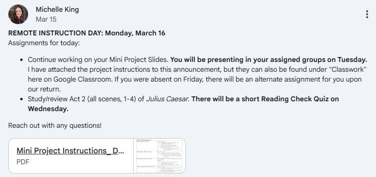
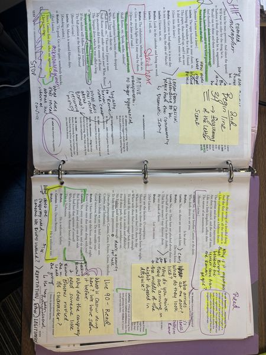
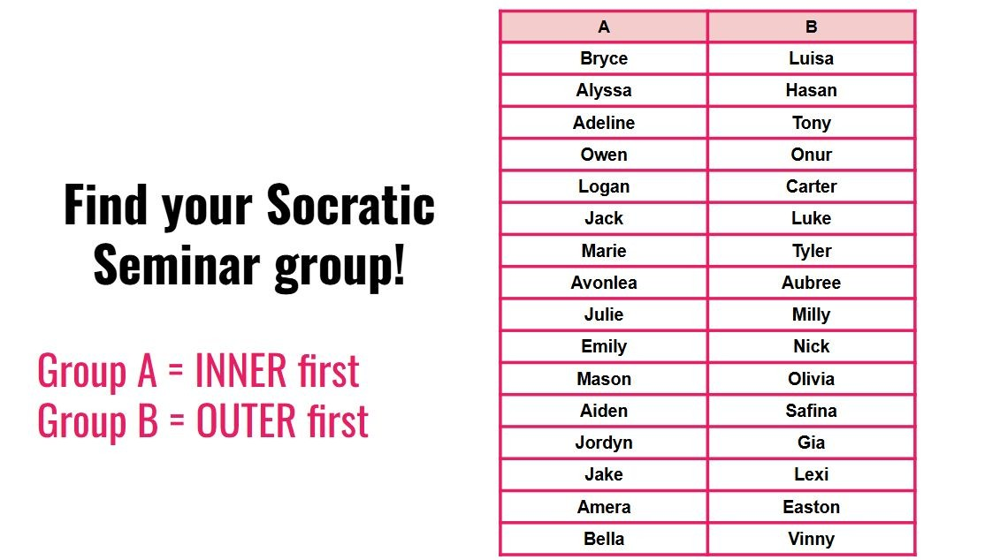
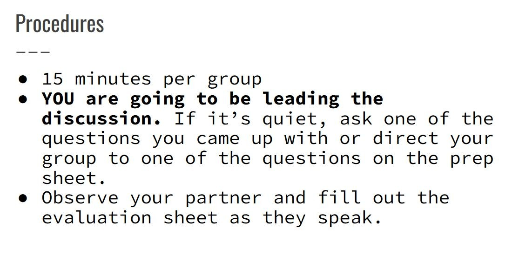
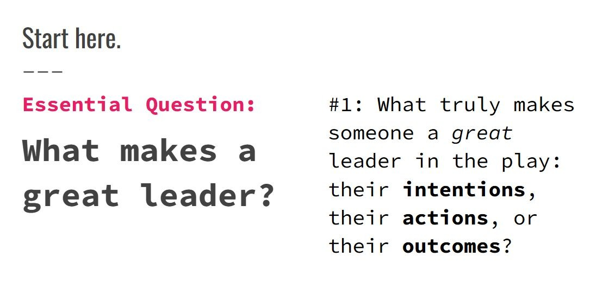
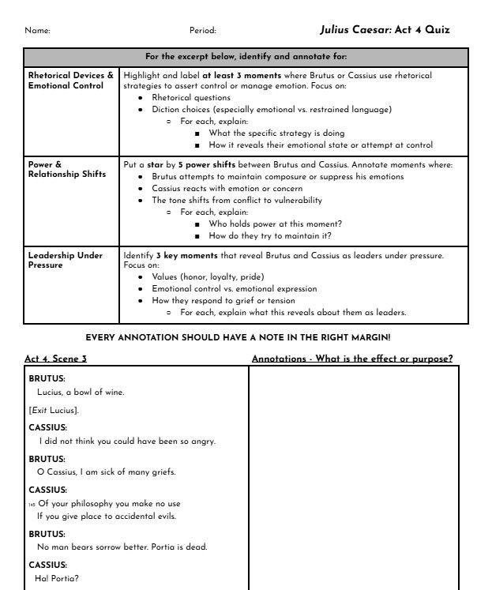
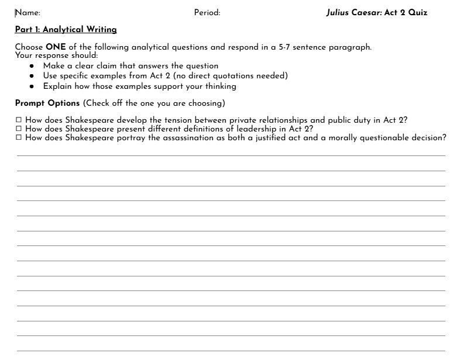
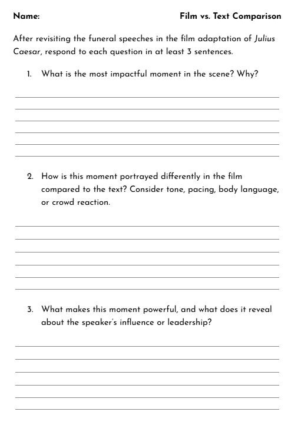

This domain captures how I communicated with students, facilitated discussion, used assessment to inform instruction, and responded flexibly when student needs or circumstances changed — including remote learning days and multimedia integration.
Component Highlights
Clear, timely communication via Google Classroom and email during snow days — keeping students connected to expectations during disruptions.
A heavily annotated teacher's copy of Julius Caesar, with planned discussion points and questions designed to push students toward deeper textual analysis.
A student-led Socratic Seminar structured around a single essential question — with students responsible for sustaining and deepening the conversation.
Varied formative assessments — annotation-based quizzes, constructed response, exit slips, and small group discussions — providing multiple windows into student understanding.
Film clips and multimedia integration when students needed additional support visualizing Julius Caesar — responsive to student needs in real time.
The 2025–2026 school year included several snow days — including a full week off in early 2026. These interruptions required flexibility and clear, consistent communication to help students stay connected to class expectations.
During these periods, I used Google Classroom announcements and email to communicate assignments, reminders, due dates, and expectations so students understood exactly what they needed to complete while we were not meeting in person. I also made myself available by email to answer questions and provide support during unexpected schedule changes.
This kind of proactive, clear communication is essential to maintaining trust with students and families — and it reflects a commitment to continuity of learning regardless of circumstances.

Click or tap any image to enlarge

Before teaching any text, I read it thoroughly and closely, and I annotate with the instructional purpose in mind. My copy of Julius Caesar is covered in color-coded annotations, sticky notes, and planned stopping points that reflect deep content preparation.
During in-class reading, students often take on speaking roles, but I pause at intentional moments to ask guided questions, clarify confusing passages, and help students analyze what is happening beneath the surface of the text. The annotations reflect planned discussion questions designed to move students beyond plot comprehension and toward rhetorical analysis, character motivation, and thematic interpretation.
Thorough teacher preparation is the foundation of meaningful discussion: students can feel when a teacher genuinely knows the material, and it invites them to go deeper themselves.
Click or tap any image to enlarge
Rather than leading a teacher-directed discussion of Julius Caesar, I designed a Socratic Seminar that placed students in charge. I began with a single opening question: "What truly makes someone a great leader in the play: their intentions, their actions, or their outcomes?" And then stepped back.
Students were organized into inner and outer circles (Group A inner first, Group B outer first), rotating after 15 minutes. While the inner circle led discussion, the outer circle observed their assigned partner and completed a peer evaluation sheet. Students were explicitly told: "You are going to be leading the discussion."
Students sustained the conversation by asking follow-up questions, responding to peers, drawing on their prep sheets, and supporting their ideas with textual evidence. Giving students ownership of the conversation is one of the most powerful ways to develop critical thinking, active listening, and genuine intellectual engagement.



Click or tap any image to enlarge
Rather than relying only on traditional multiple-choice quizzes, I designed formative assessments that asked students to demonstrate understanding through annotation, close reading, and writing — providing a more accurate and complete picture of student thinking.
One reading check quiz assessed students' ability to follow the annotation protocol and locate rhetorical devices in the text. Another used a constructed response format, requiring students to write a 5–7 sentence paragraph choosing from analytical prompt options — explaining their thinking and supporting it with specific textual examples from Acts 1–4 of Julius Caesar.
Additional formative strategies included informal small group discussions, exit slips, and comprehension checks throughout the unit. Together, these assessment tools gave me ongoing, actionable data to adjust pacing, reteach concepts, and support individual students.


Click or tap any image to enlarge
When students needed additional support visualizing key scenes from Julius Caesar, I responded in real time by incorporating film clips from the 1970 film adaptation alongside a guided Film vs. Text Comparison worksheet.
Rather than solely relying on the written text, the film provided a second entry point — helping students better understand tone, character motivation, blocking choices, and the emotional impact of performance decisions. Students were then asked to compare the film portrayal to the written text, considering how choices in pacing, body language, and crowd reaction shaped meaning.
Responsiveness to student needs is not a sign of straying from the plan. It is the plan. Digital media can be an extraordinarily powerful tool for providing multiple pathways into challenging content, and knowing when to reach for it is a mark of experienced, adaptive teaching.

Click or tap any image to enlarge